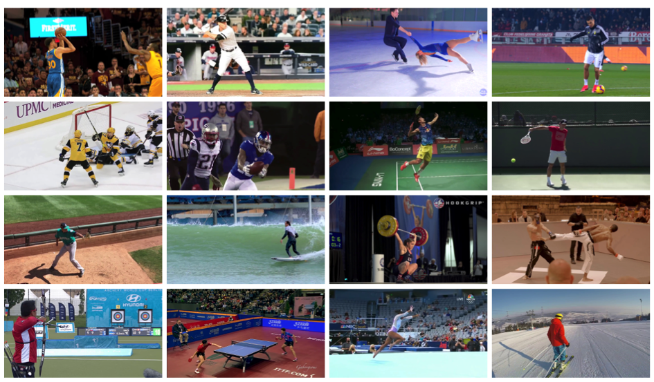
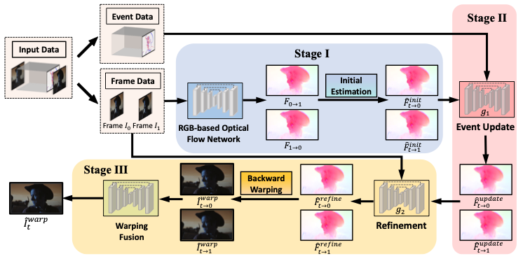
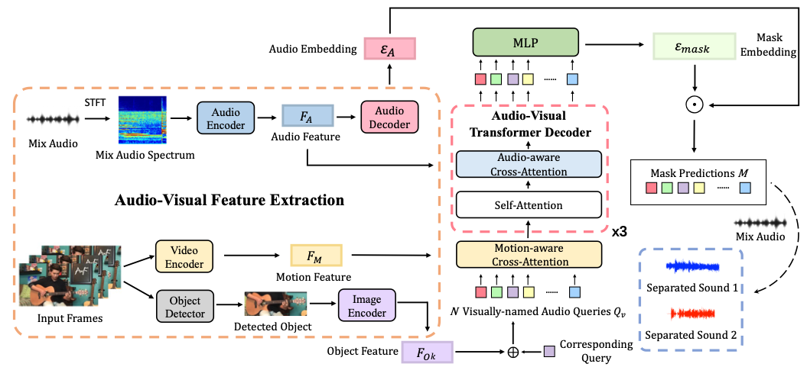
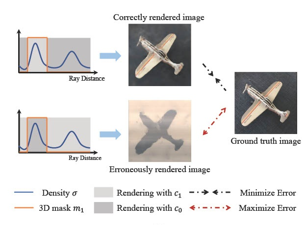
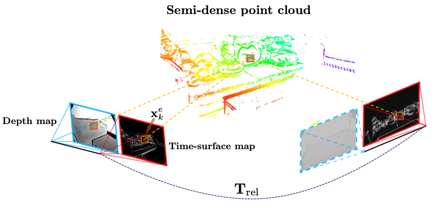
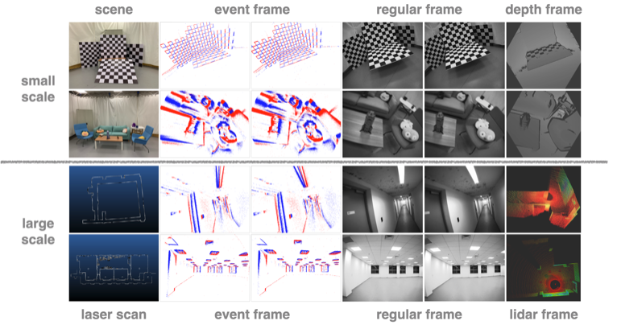

Publications
* indicates equal contributions.
|
|

|
SportsSloMo: A New Benchmark and Baselines for Human-centric Video Frame Interpolation
Jiaben Chen, and Huaizu Jiang
arXiv, 2023
project page /
paper /
code
In this paper, we introduce SportsSloMo, a benchmark consisting of more than 130K video clips and 1M video frames of high-resolution (≥720p) slow-motion sports videos, for human-centric video frame interpolation.
|
|

|
Revisiting Event-based Video Frame Interpolation
Jiaben Chen,
Yichen Zhu,
Dongze Lian,
Jiaqi Yang,
Yifu Wang,
Renrui Zhang,
Xinhang Liu,
Shenhan Qian,
Laurent Kneip,
and Shenghua Gao
IEEE/RSJ International Conference on Intelligent Robots and Systems (IROS), 2023
project page /
paper /
video
In this paper, we revist event-based video frame interpolation with a proxy-guided synthesis strategy and a event-guided optical flow refinement strategy.
|
|

|
iQuery: Instruments as Queries for Audio-Visual Sound Separation
Jiaben Chen,
Renrui Zhang,
Dongze Lian,
Jiaqi Yang,
Ziyao Zeng,
and Jianbo Shi
Computer Vision and Pattern Recognition Conference (CVPR), 2023
project page /
paper /
arXiv /
video /
code
In this paper, we re-formulate visual-sound separation task and propose Instrument as Query (iQuery) with a flexible query expansion mechanism.
|
|

|
Unsupervised Multi-View Object Segmentation Using Radiance Field Propagation
Xinhang Liu,
Jiaben Chen,
Huai Yu,
Yu-Wing Tai,
and Chi-Keung Tang
Neural Information Processing Systems (NeurIPS), 2022
project page /
paper /
code /
data
In this paper, we propose radiance field propagation (RFP), a novel approach to segment objects in 3D during reconstruction given only unlabeled multi-view images of a scene.
|
|

|
DEVO: Visual Odometry in Challenging Conditions using a Stereo Event Depth Camera
Yi-Fan Zuo*,
Jiaqi Yang*,
Jiaben Chen,
Xia Wang,
Yifu Wang,
and Laurent Kneip
International Conference on Robotics and Automation (ICRA), 2022
paper
In this paper, we proposed a novel real-time visual odometry framework for a stereo setup of a high-resolution event and depth camera to deal with challenging conditions.
|
|
|
AutoVideo: An Automated Video Action Recognition System
Daochen Zha*,
Zaid Pervaiz Bhat*,
Yi-Wei Chen*,
Yicheng Wang*,
Sirui Ding*,
Jiaben Chen*,
Kwei-Herng Lai*,
Mohammad Qazim Bhat*,
Anmoll Kumar Jain,
Alfredo Costilla Reyes,
Na Zou,
and Xia Hu
International Joint Conference on Artificial Intelligence (IJCAI), 2022
paper /
video /
code
In this paper, we presented AutoVideo, a Python system for video action recognition based on Automated Machine Learning.
|
|

|
VECtor: A Versatile Event-Centric Benchmark for Multi-Sensor SLAM
Ling Gao*,
Yuxuan Liang*,
Jiaqi Yang*,
Shaoxun Wu,
Chenyu Wang,
Jiaben Chen,
and Laurent Kneip
Robotics and Automation Letters (RA-L), 2022
International Conference on Intelligent Robots and Systems (IROS), 2022
paper /
benchmark
In this paper, we proposed the first complete multi-sensor benchmark dataset containing an event-based stereo camera, a regular stereo camera, multiple depth sensors, and an inertial measurement unit.
|
Miscellanea
|
|
Conference Reviewer: ECCV 2022, IROS 2022/2023, AAAI 2024.
|
Personal Interests:
- I am a huge fan of Stephen Curry.
- In my spare time, I enjoy playing basketball and FIFA.
|
|